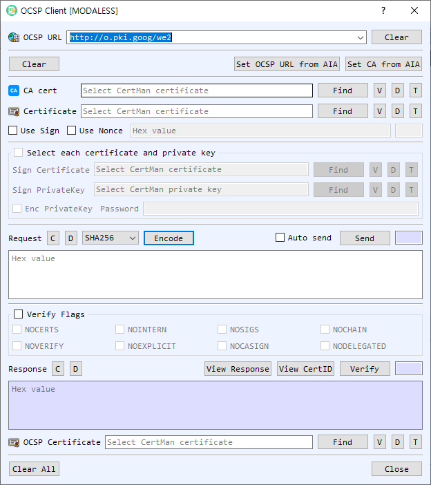

OCSP Client Dialog Guide
The OCSP Client creates an Online Certificate Status Protocol request, sends it to a responder, and verifies the returned response. It can include a nonce and optionally sign the request.

Figure 1. OCSP Client dialog. Configure the responder and target certificate, encode or send a request, then verify the response.
Screen Areas
- OCSP URL — Enter or select the responder URL. Previously used URLs are retained. Clear clears the URL history/input.
- Set OCSP URL from AIA / Set CA from AIA — Read the responder URL or issuer CA certificate from the target certificate's Authority Information Access information.
- CA cert — Select the issuer CA certificate. Find browses for a certificate; V, D, and T view, decode, and identify it.
- Certificate — Select the certificate whose status is being checked. The dialog can also obtain it from CertMan. The adjacent Find, V, D, and T controls select, view, decode, or identify the certificate.
- Use Sign / Use Nonce — Optionally sign the OCSP request with a signing certificate/private key and include a nonce. The signing certificate and key can be selected from CertMan or from individual files; enable Enc PrivateKey and enter its password for a protected key. The nonce value is hexadecimal.
- Request — Encode builds the OCSP request. Auto send sends it immediately after encoding; otherwise use Send. C clears the request and D decodes it in BerEditor.
- Verify Flags — Enable the flag group and select any applicable response-checking flags:
NOCHAIN,NOSIGS,NOINTERN,NOCERTS,NOVERIFY,NOEXPLICIT,NOCASIGN, orNODELEGATED. - Response — Displays the responder response in hexadecimal. View Response opens response details; View CertID inspects the certificate identifier; Verify validates the response. C clears the response and D decodes it.
- OCSP Certificate — Select the responder certificate when needed for response verification. Find, V, D, and T select or inspect it.
- Clear All / Close — Clear dialog data or close the client.
Create and Send a Status Request
- Enter the OCSP URL or select Set OCSP URL from AIA after choosing a target certificate.
- Select the target Certificate. Provide its CA cert or use Set CA from AIA where available.
- Optionally enable Use Nonce and enter a hexadecimal nonce. Enable Use Sign and select signing credentials if the responder requires signed requests.
- Select Encode. Enable Auto send to transmit immediately, or select Send after reviewing the encoded request.
- The response is placed in the Response area when the HTTP request succeeds.
Verify a Response
- Select the relevant responder certificate if needed.
- Configure Verify Flags according to the verification requirements.
- Select Verify and review the result in BerEditor's message/log area. Use View Response and View CertID to inspect details.
Notes
- The CA certificate identifies the issuer of the certificate being checked; the OCSP responder certificate is used to verify the signed response. These may be different certificates.
- Request signing is optional and is separate from the responder's response signature.
- A successful HTTP send only confirms the responder returned data. Use Verify to validate the OCSP response before relying on its status.